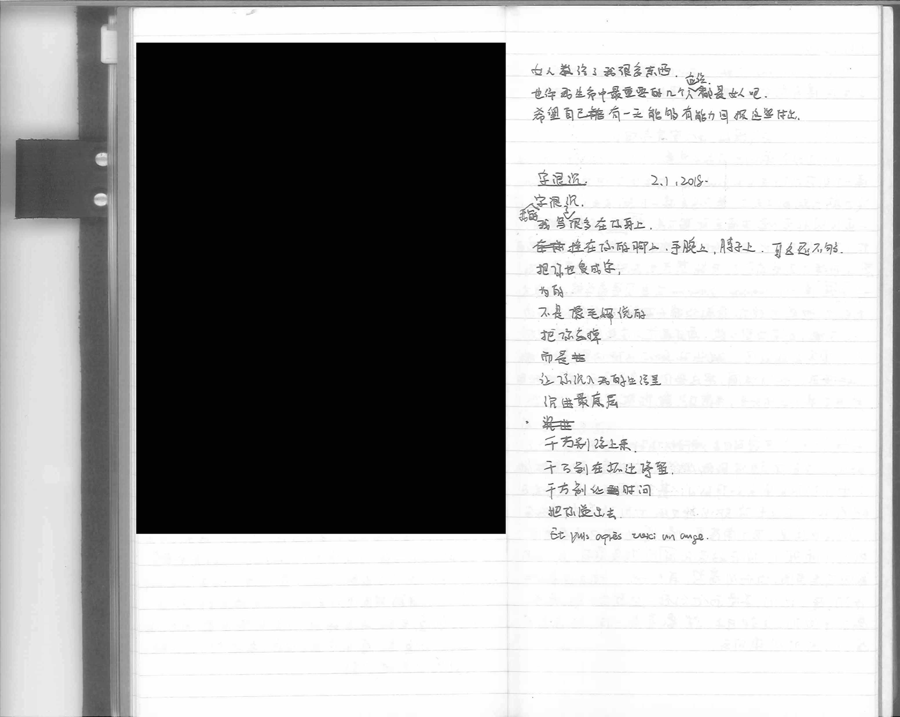
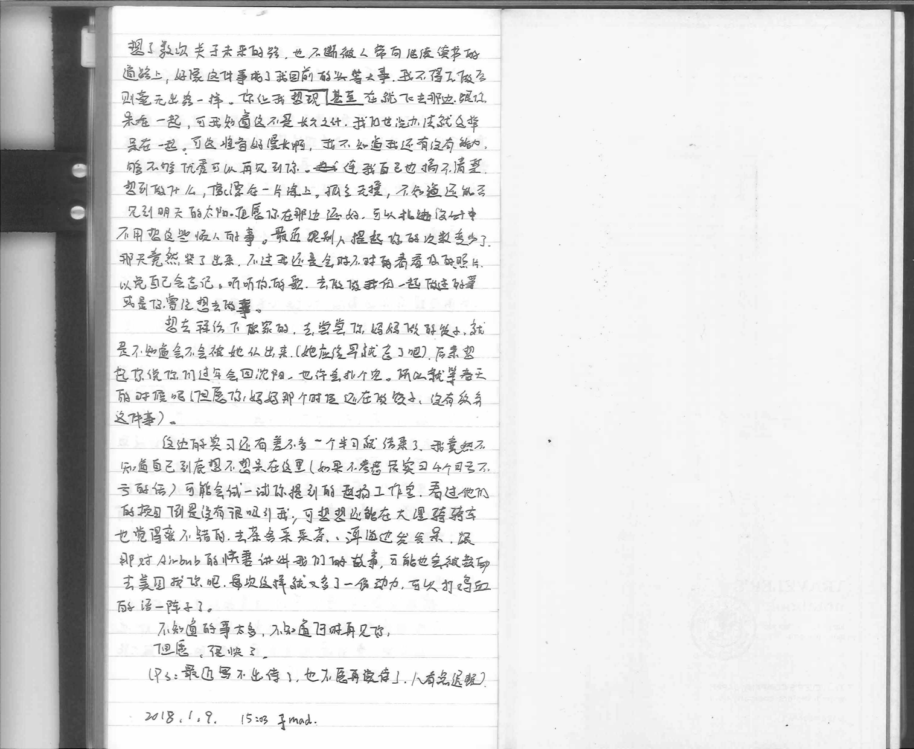

我昨天崩溃了
从前可以一走了之
可以不玩他们的游戏
可现在
除了死 我想不出其他的办法
但愿我以后不会再崩溃
不再这样脆弱
因为我还不想死
不想像个酒鬼一样
握着打不出去的电话
死在路边
当我再进退两难的时候
我会告诉我自己
进
总比退强
你说，对吗？
2018.04.13
写在本子上的话#7
2018.04.13
写在本子上的话#6
2018.04.13
写在本子上的话#5
2018.04.13
写在本子上的话#4

2018.04.13
写在本子上的话#3
2018.04.13
写在本子上的话#2

2018.04.13
写在本子上的话#1

2018.04.01
下班路上的想法和两首小诗
一个十分可观的视角会让你看得很全面，像智慧的猫头鹰一样洞察一切，却迈不出
艰难的第一步，主观的人也许是盲目德，确实在不断前进的，不断在碰壁中调整
方向的，可他们的结局会是一样的吗？
算不上麻木
也算不上情感丰富
仅有的一点点情绪都被本子偷去
就这样
跟我的本子和博客
会不会
乐观的过一辈子
大鱼大鱼
你别急
等我脱掉衣服
拿出笔
马上
马上就把赤裸裸展示给你
2018.03.25
江边找到的答案
我们一直这么努力的往上爬，就是怕沦落为社会的底层，可其实我们一直在原地蹦跳
或者说通向底层的楼板远比通向上层的要脆弱。
记不记得我们在河边喝酒的时候我问你的问题：除去别人对我的影响，赤裸裸的我到底是什么样或者甚至存在吗？
我觉得我在黄浦江边找到答案了，他确实存在，只不过很微小很脆弱。
2018.03.23
studiONE給的一點建議吧
“理出一条作品集的主线，跟你的个人经历结合起来，比如在画廊的工作经历和美术馆或者私人展馆的设计，从一个内部从业者的角度给出一些新颖的东西来。
申请前需要想好的一些东西，写在ps里
你是什么样的
你对于建筑的热情来自于哪里，深深地好好地挖掘一下，这个要花点时间想想，要结合将来的职业规划，你要做什么，哈佛能提供给你什么？哈佛只是一站，不是终点，哈佛希望你是一个有清晰地职业规划的人
作品集至少还要加1-2个项目，减少艺术部分的工作量
作品集这四个月至少是要脱产的，之前的gre不拿半年系统的复习和裸考状态差别没有太大，这条建议听起来蛮可靠的，托福要尽快搞定，104以上”
最近变得特别鸡血，回来已经五个月多了，巴黎buff和你的印记被大环境磨的差不多了。留学这件事算是正式又上了我的日程吧，走访了一家辅导机构，有惊喜也有收获，惊喜这么多有志青年海龟高材生在这个圈子里，收获在自己还是很普通还有很多进步的空间。
最近状态不错，十有八九归功于上海安静的路人们给了我点思考的时间吧。
3.24更新- 蔡又把我推回到了这件事的出发地，逼迫我重新回去考虑我的动机
奇怪为什么这些人毕业后转行率这么高？
2018.03.21
和大鱼的对话框
创这个blog其实是想为我们俩断断续续没时没点的交流做个平台，想到就写，想起来就看看，忙，就各自过各自的生活，不必有什么压力。
你觉得呢？大鱼